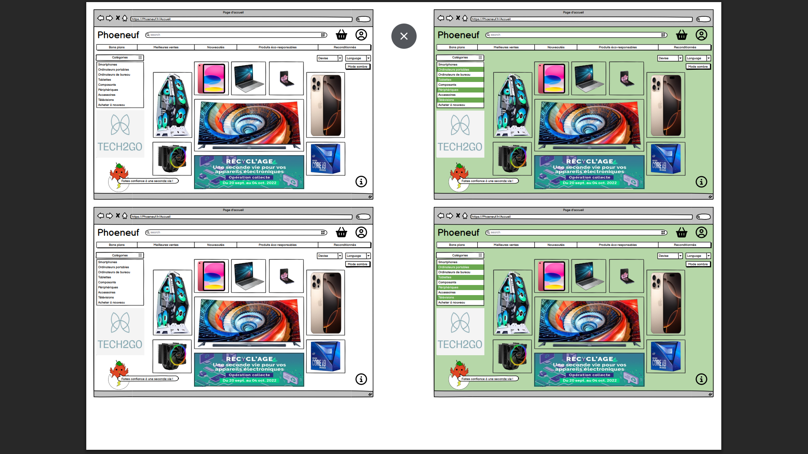
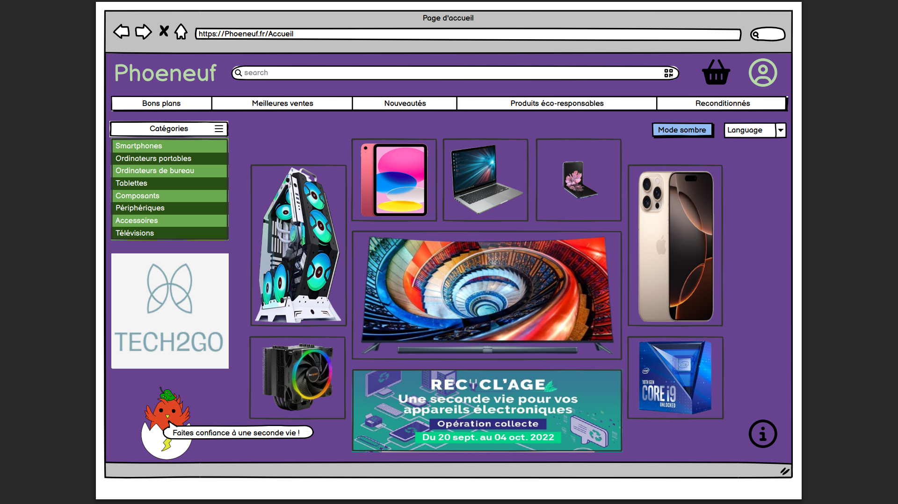
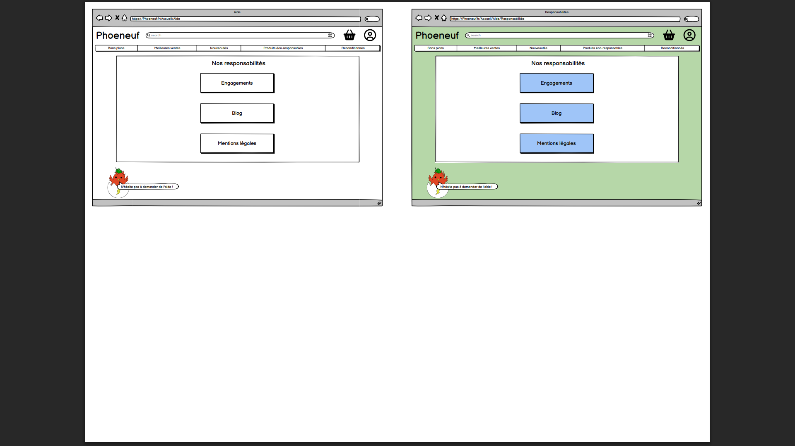
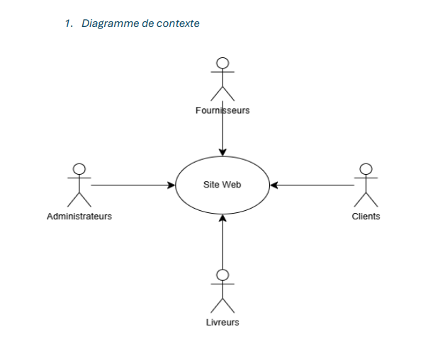

Phoeneuf
Conception et Gestion de Projet pour un site e-commerce B2C
Le Contexte
Dans le cadre de notre SAÉ de première année, nous devions simuler la phase préparatoire complète d'un site de e-commerce que nous avons nommé Phoeneuf. L'entreprise cliente, spécialisée dans les produits technologiques reconditionnés, portait de fortes valeurs liées à l'écologie et à la lutte anti-gaspillage.
L'objectif n'était pas de coder l'application, mais d'en réaliser toute l'analyse, la conception technique, le maquettage ergonomique et la planification au sein d'une grande équipe de 8 étudiants.
Mes Missions & Réalisations
Au cours de ce projet, je me suis particulièrement investie dans le pôle Design et Conception :
- UX/UI Design : Création de l'arborescence et des maquettes du site (Front-office) en respectant une charte graphique éco-responsable, incluant un design en mode sombre.
- Conception BDD : Participation à l'élaboration du schéma relationnel (MCD/MLD) pour gérer une base complexe (clients, paniers, stocks, facturation, fournisseurs).
- Documentation technique : Co-rédaction du Dossier de Conception et du Cahier des Charges Fonctionnel (règles de gestion, diagrammes de contexte).
Ce que j'ai appris
Ce projet a été fondamental pour comprendre l'importance cruciale de la phase de conception avant d'écrire la moindre ligne de code. J'ai appris à traduire les besoins abstraits d'un client en spécifications techniques claires, à penser "expérience utilisateur" (UX), et à m'organiser efficacement au sein d'une équipe nombreuse à l'aide d'outils comme les diagrammes de Gantt et le suivi GitLab.
Galerie des Livrables



